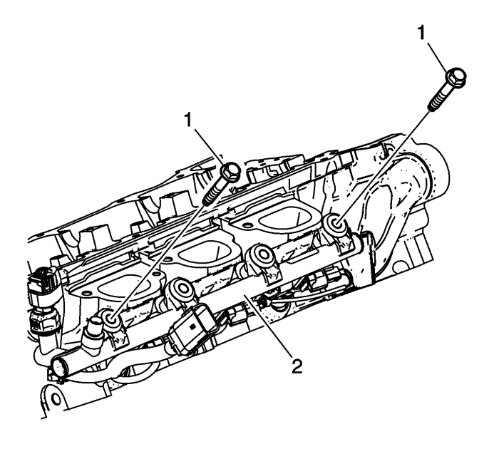
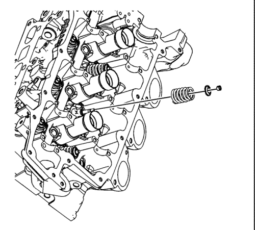
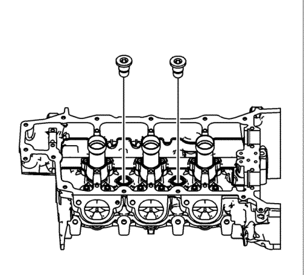

- Quite los tornillos (1) del tubo de distribución del combustible.

- Retire el tubo de distribución del combustible y los inyectores (1) en conjunto, utilizando la herramienta de desmontaje EN 49248.
- Retire las bujías.
Nota: Asegúrese de que los platillos de válvula no van a tocar nada durante el siguiente paso para evitar que se doblen o dañen.
- Con una base con la profundidad apropiada y un martillo de plástico, golpee ligeramente el seguro del muelle de la válvula para soltar los guardaválvulas.

Advertencia : Los muelles de la válvula comprimida tienen una gran tensión contra el compresor del muelle de la válvula. Los muelles de la válvula que no estén comprimidos o liberados correctamente por el compresor del muelle de la válvula se pueden expulsar del compresor aplicando mucha fuerza. Tenga cuidado al comprimir o soltar el muelle de la válvula con el compresor del muelle de la válvula y al desmontar o montar las llaves del vástago de válvula. Si no se tiene cuidado, se podrán producir lesiones físicas.
Atención: No comprima los muelles de válvula a menos de 24,0 mm (0,943 pulg.) El contacto entre el seguro del muelle de válvula y el retén de aceite del vástago de válvula puede provocar daños potenciales en el retén.
- Comprima el muelle de válvula usando el compresor EN 8062 y el adaptador EN 46119.
- Use el imán de la EN 46117 herramienta de desmontaje/montaje para desmontar los guardaválvulas.
- Desmonte el compresor del muelle de la válvula y el adaptador.

- Desmonte el seguro del muelle de la válvula.
- Desmonte el muelle de la válvula.
- Desmonte la válvula.

Nota: No reutilice NUNCA un retén de aceite de vástago de válvula.
- Retire el retén de aceite de vástago de válvula con la EN 46116 herramienta de desmontaje y montaje y elimínela.
- Repita estos pasos para el resto de válvulas.

- Retire los tapones de expansión de la galería de aceite de la culata.

- Retire los tapones roscados de refrigerante de la culata.

- Compruebe las válvulas de control de alimentación de aceite del actuador de posición del árbol de levas. Las válvulas de control dañadas, con acceso limitado o atascadas deben sustituirse. Si las válvulas están en buen estado, haga caso omiso de los pasos que detallan la sustitución de las válvulas de control.
- Coloque la culata sobre una superficie firme con las válvulas de control (1) mirando hacia arriba. Proteja todas las superficies maquinadas y los componentes de la culata.
- Mediante una broca EN-46122-3, taladre la parte superior de la válvula de control para dejar al descubierto la bola de control.

- Extraiga la bola de control (1) y el muelle de la bola de control (2) del interior de la válvula de control.
- Siga taladrando el resto del casquillo de la válvula de control hasta una profundidad aproximada de 19 mm (0,75 pulg.) (a) colocando cinta adhesiva en la broca a modo de indicador de la profundidad. No es necesario ni aconsejable taladrar completamente la válvula de control hasta el fondo.
- Lubrique el macho de roscar EN-46122-4 con el lubricante incluido en la herramienta de desmontaje y montaje EN-46122. Haga una rosca en la parte taladrada de la válvula de control (1) que queda en la culata. Haga una rosca con la máxima profundidad posible hasta que el macho de roscar alcance el fondo de la culata.

- Monte el perno, la tuerca, las arandelas y el collarín EN-46122-2 (1) como se indica. Coloque la parte del collarín con mayor diámetro interior HACIA ABAJO en dirección a la culata.
- Enrosque el tornillo a mano y por completo en el casquillo de la válvula de control roscada y, a continuación, apriete ligeramente la tuerca contra la arandela.
- Sujete el tornillo con una llave y utilice otra para apretar la tuerca hasta extraer el casquillo de la válvula de control (1) de la culata.
- Limpie el orificio de la válvula de control y los conductos afines hasta eliminar virutas producidas al taladrar o cualquier otro residuo.